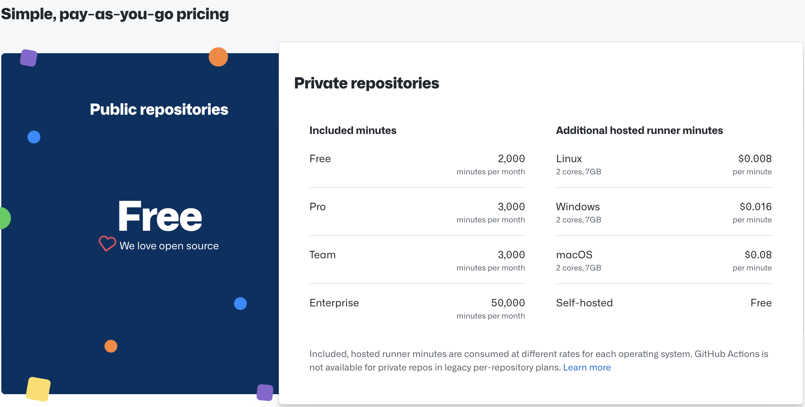
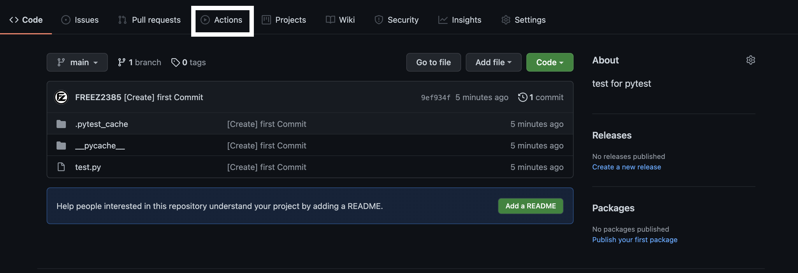
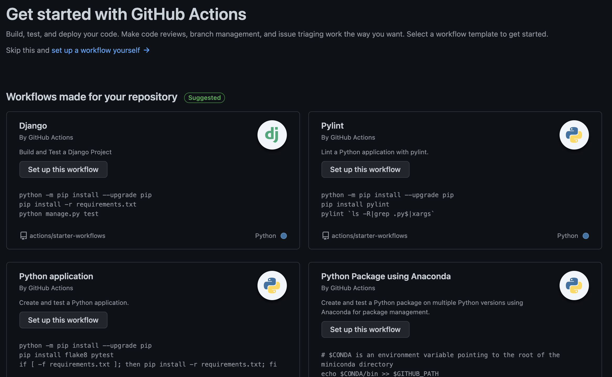
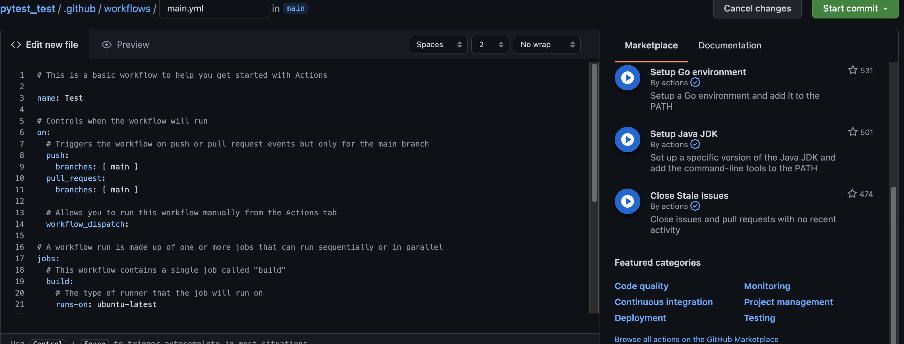
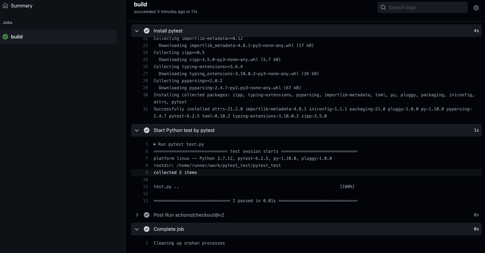
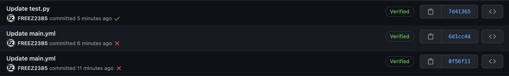

필자는 백엔드, 프론트엔드 이외에도 테스트, 빌드도 도맡아 하고 있다. 하지만 테스트도 수동으로 작성하는 경우도 있고, 이전까지는 빌드까지 수동으로 했었다. 필자가 다녔던 회사는 GitLab를 사용하고 있고 GitLab에 있는 CI/CD를 사용하기 시작했다. 그렇게 자연스럽게 CI/CD에 흥미가 생기기 시작했고, 직접 만져보는 기회는 없었다. 그래서 회사 밖에서 개인적으로 CI/CD에 대해서 알아보기로 하였다. 기본적으로 Jenkins라는 자동화 툴이 있는 것을 알았지만 로컬사이트로 직접 할 수는 없고 서버에 구축해야하는 것이지만, 필자는 개인 서버가 없기에 AWS를 빌릴 수 밖에 없었다. 하지만 EC2의 인스턴스를 빌리고 구현하는것만 해도 월 약 60$ USD라는 비용이 들기도 하다. 아직은 CI/CD에 비용을 들기에는 아쉽기에 Github에서 가볍게 사용하는 Github Actions를 알아보게 되었다.
GitLab의 CI/CD를 보면서 가볍게 Github Actions를 훑어보았을때는 아직 익숙치 않았지만 지금은 CI/CD에 대해 어느 정도 지식을 쌓고, DevOps를 목표로 잡고 있다면 해보고싶은 매력이 있다. AWS 서버에 Jenkins를 넣고 돌리기 전까지는 Github Actions를 사용해보기로 하였다.
Github Actions를 사용하기 위해 알아두어야 할 것
Github Actions역시 무료가 아니라는 점을 알아두고 싶다. 개인 오픈소스로 사용되는 Public Repository의 경우는 무료이지만 제한되는 부분이 있으며, Private에서부터는 요금이 발생하기 시작한다.

Public Repository는 무료이기 때문에 부담 없이 사용이 가능하다.
Github Actions로 간단한 테스트를 해보기
필자가 간단히 작성해 둔 Python 테스트 코드를 리포지토리에 직접 넣었던 적이 있다. 이번에 테스트 코드 리포지토리에 Github Actions을 직접 사용해보기로 하였다.

리포지토리에 메뉴들 중 Actions를 클릭해보자

파일 내용 및 종류에 따라 추천하는 워크플로우를 보여주게 된다. 필자는 단순히 test.py 하나만 테스트를 위해 만들었기 때문에 코드를 직접 작성하는 방식으로 진행하도록 하겠다. 직접 작성을 위해서는 set up a workflow yourself 를 클릭하도록 하자.

이렇게 직접 작성을 하게 된다면 에디터 창이 표시된다. 여기서 필요한 정보들을 간단히 추려 주석을 쳐보았다.
1
2
3
4
5
6
7
8
9
10
11
12
13
14
15
16
17
18
19
20
21
22
23
24
25
26
27
28
29
30
31
# 액션에 사용되는 이름
name: CI
# 워크플로우가 발생될 때의 이벤트
on:
# 작성된 브런치가 push 혹은 pull_request될 때 발생
push:
branches: [ main ]
pull_request:
branches: [ main ]
# 수동으로 발생
workflow_dispatch:
# 워크플로우에서 처리할 때의 잡
jobs:
# 잡의 이름을 설정
build:
# 잡을 시작할 때 움직이는 러너의 구성
runs-on: ubuntu-latest
# 러너 이벤트
steps:
# 러너 쉘에 작동시킬 시나리오(테스트 혹은 배포)
- name: Run a multi-line script
run: |
echo Add other actions to build,
echo test, and deploy your project.
이렇게 각 구동을 통해 기동을 시킬 수 있다. 여기서 필자는 이렇게 수정을 해보겠다.
1
2
3
4
5
6
7
8
9
10
11
12
13
14
15
16
17
18
19
20
21
22
23
24
25
26
27
28
29
30
31
32
33
34
35
# 액션에 사용되는 이름
name: Test
# 워크플로우가 발생될 때의 이벤트
on:
# 작성된 브런치가 push 혹은 pull_request될 때 발생
push:
branches: [ main ]
pull_request:
branches: [ main ]
# 수동으로 발생
workflow_dispatch:
# 워크플로우에서 처리할 때의 잡
jobs:
# 잡의 이름을 설정
build:
# 잡을 시작할 때 움직이는 러너의 구성
runs-on: ubuntu-latest
# 러너 이벤트
steps:
- uses: actions/checkout@v2
- name: Set up Python 3.7
uses: actions/setup-python@v1
with:
python-version: 3.7
- name: Install pytest
run: |
python -m pip install --upgrade pip
pip install pytest
- name: Start Python test by pytest
run: pytest test.py
이렇게 수정을 하고 github에 커밋을 시키면 Github Actions가 작동하게 된다. 이렇게 테스트 시나리오가 보이게 되며 전부 성공시 V표시가 나타나며 Github 커밋 로그에 V표시가 뜨게 된다.


마무리
필자가 DevOps에 대한 꿈을 가지게 되면서 단순 프로그래밍 뿐만이 아닌 테스트, 배포, 빌드에도 신경을 써야하는 생각이 들었다. 무엇보다 그걸 자동화 시킨다면 생산성에서도 얼마나 효율이 좋아질 수 있을 것인가. 비록 간단한 CI/CD로 사용해보았지만 응용을 해서 나중에는 빌드, 배포도 해보는 것도 재밌을 것 같다는 생각이 든다.
혹시 피드백 혹은 모르는 것이 있다면 댓글 부탁드립니다.